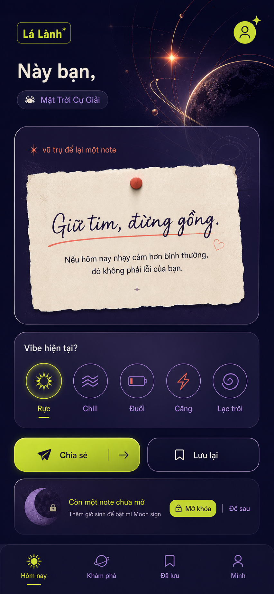
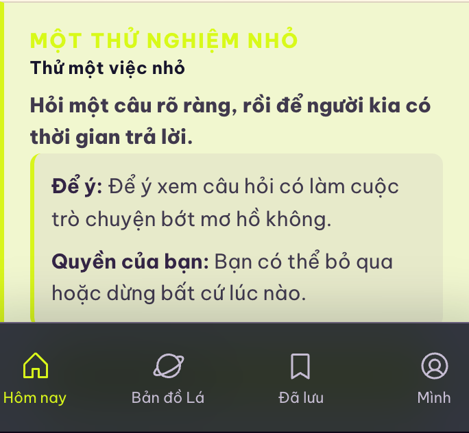

Full view · source direction và implementation sau sửa
Source · Cosmic Glass Signal

Implementation · final runtime viewport
Focused paper region · cách dùng màu trên nền sáng
Source · chữ ink đậm, accent có giới hạn
Implementation · deep leaf ink sau sửa
Iteration evidence · trước và sau sửa tương phản
Trước · lime 1.08:1

Sau · deep leaf 6.89:1